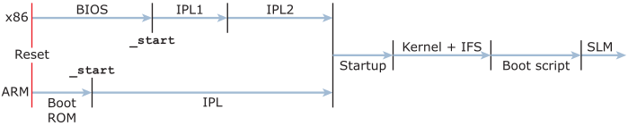

Due to the different board architectures and processes handled by the board firmware, IPLs for x86 and ARM platforms are very different.
The figure below shows, at a high level, the sequence of components that initialize and boot a board, for each of the x86 and ARM platforms. Even though the startup code differs between the platforms, this code is considered the point of convergence, because it is the first OS code to run. The ARM sequence shows a Boot ROM, but some boards do not use Boot ROM or use a first-stage, low-level Boot ROM.

In the diagram above, the files with the first software code to be executed are called _start for both platforms.
TARGET(elf64-littlearm)
OUTPUT_FORMAT(elf64-littlearm)
ENTRY(_start-arm-board_name)
MEMORY
{
stack_top : ORIGIN = 0x402f93FC, LENGTH = 0x0
stack_space : ORIGIN = 0x402f7400, LENGTH = 0x2000
ram : ORIGIN = 0x402f0400, LENGTH = 0x7000
/* TLB table must be aligned to 16K (0x4000) */
tlb : ORIGIN = 0x40310000, LENGTH = 0x4000
/* dedicated for non-cacheble buffer */
scratch : ORIGIN = 0x80000000, LENGTH = 0x100000
}
SECTIONS
{
.text : {
_start.o(.text)
*(.text)
...